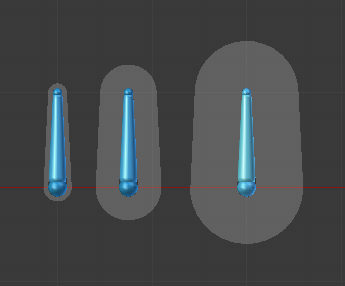
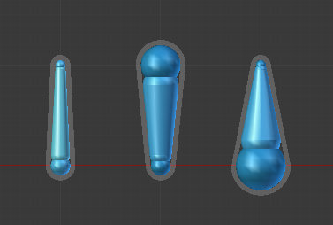

形变
参考
- 模式:
所有模式
- 面板:
形变面板。
在此面板中你可以设置每个骨骼形变选项。
关闭面板标题中的复选框，可以防止骨骼变形几何体，从而覆盖之前可能分配的任何权重；这屏蔽了它的影响力。
当网格使用 骨架变形 工具与 附带自动权重 选项的父级为骨架时，它还排除了自动权重计算中的活动骨骼。
封套

封套模式的骨骼影响区域。
封套是用于所有可用的物体类型（网格，晶格，曲线，曲面和文本）最通用的蒙皮方法。它基于骨骼及其网格顶点组之间的接近度，每个骨骼具有两个不同的影响区域，如 封套 视图显示模式：
内部区域由骨骼的 "固体" 部分实现，并由根部和尾端半径控制。
外部区域由骨骼周围的较亮的部分实现，并由 距离 设置控制。
See also
骨骼编辑 中有讲解如何修改。
- 封套间距
距离定义骨骼中体积的范围是对形变物体顶点的影响。几何体形状随着远离骨骼而越来越少地受到骨骼的影响（以二次衰减的方式）。
 多种封套尺寸的骨骼。
- 封套权重
用于控制使用封套时骨骼对变形物体的全局影响。
它只对 "共享" 的几何部分受多于一个骨骼的影响（通常在关节处）-- 具有较高权重的骨骼比对低权重的骨骼有更大的影响 ...请注意，当设置为 0.0 时，它具有与禁用 形变 (Deform) 选项相同的效果。
- 封套叠加
此选项控制两个形变方法都启用时如何交互。默认情况下，当它们都是激活的，所有顶点至少属于一个顶点组的只能通过顶点组方法形变。其他 "孤立" 顶点由一个封套处理。当您启用此选项时，该骨骼将对顶点（基于其封套设置）产生 "形变影响" 与相应顶点组中的该顶点的权重相乘。换句话说，顶点组方法通过封套方法进一步 "权重" 。
- 半径首端/尾端
设置封套骨骼根部和尾端的半径。在这个体积内，几何体完全受到骨骼的影响。
 三个骨架的骨骼都使用封套权重。
第一个具有默认半径值，另外两个具有不同的尾端和根部的半径值。